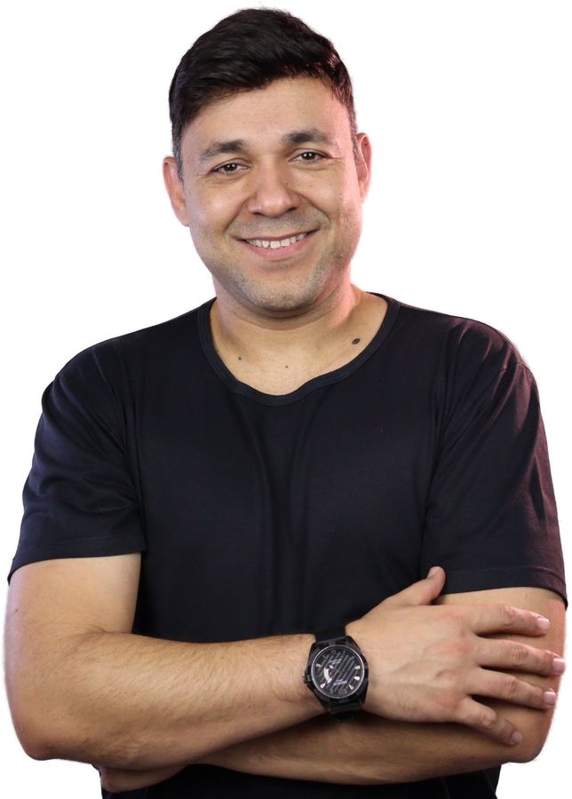

Seja bem-vindo à plataforma PREPARA UFU
Eu sou o Professor Jazz. Escolha abaixo o que você quer acessar.
Acesso com o e-mail liberado pelo Prof. Jazz.

Eu sou o Professor Jazz. Escolha abaixo o que você quer acessar.
Acesso com o e-mail liberado pelo Prof. Jazz.
